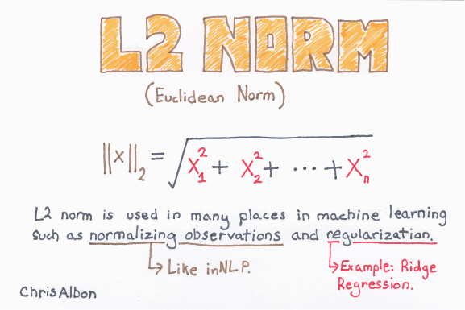
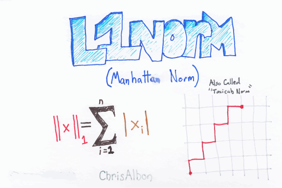
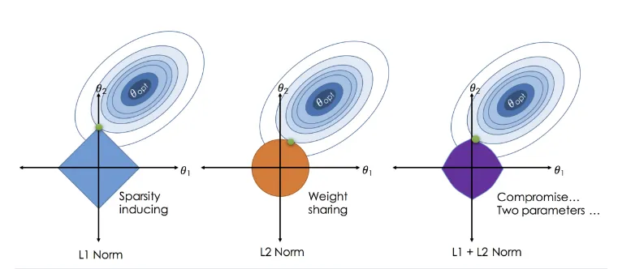

Khi xây dựng mô hình dự báo, ta sẽ gặp phải các vấn đề sau.
Over fitting: Hiện tượng mô hình có chất lượng tốt trên tập train nhưng lại xây dựng không tốt trên tập test.
Độ chính xác kém khi số lượng quan sát không đủ: Khi \(n \gg p\), nghĩa là số lượng quan sát lớn hơn rất nhiều so với số biến, chất lượng mô hình có thể được đảm bảo. Tuy nhiên, nếu n không lớn hơn nhiều so với p, mô hình sẽ gặp phải vấn đề về chất lượng mô hình.
Khả năng giải thích ý nghĩa mô hình: Thông thường, khi đưa càng nhiều biến - độ chính xác của mô hình càng tăng lên. Tuy nhiên, nhiều biến trong đó không ảnh hưởng lớn đến mô hình. Việc giảm bớt biến trong mô hình có thể giúp việc giải thích mô hình trở nên đơn giản hơn.
Để khắc phục các nhược điểm trên, khi xây dựng mô hình, ta có hai kỹ thuật lớn sau. - Subset selection: Xác định số lượng biến ảnh hưởng nhiều nhất đến biến cần dự báo và xây dựng mô hình dựa trên các biến này. - Shrinkage: Còn được gọi là regularization có tác dụng giảm variance của mô hình thông qua việc thay đổi loss function, tăng giá trị của hàm này khi mô hình trở nên phức tạp. Nhóm kỹ thuật này là nhóm được sử dụng đặc biệt nhiều trong tất cả các thuật toán của machine learning
Trong chương này, ta sẽ tìm hiểu các nhóm kỹ thuật này thông qua bài toán hồi quy tuyến tính.
29.2 Subset Selection
29.2.1 Best subset selection
Thuật toán này cho phép lựa chọn mô hình có số biến phụ thuộc tối ưu bằng việc xây dựng rất nhiều mô hình và chọn ra từ đó mô hình có RSS thấp nhất.
Các bước thực hiện:
Gọi \(M_0\) là mô hình ban đầu (null model). Mô hình này không có biến độc lập, dự báo giá trị Y bằng giá trị trung bình của tập train
Với k=1..p:
Xây dựng \((\stackrel{p}{k})\) mô hình với đúng k biến độc lập
Lựa chọn từ mô hình gọi là \(M_k\) với RSS có giá trị nhỏ nhất
Chọn các mô hình \(M_0,...,M_k\) bằng cross validation bằng các tiêu chí AIC, BIC hoặc \(\overline{R}^2\)
Lưu ý:
Subset selection lựa chọn mô hình tốt nhất từ \(2^p\) mô hình. Trong bước 2, ta đã giảm việc lựa chọn cross validation từ \(2^p\) xuông p+1 mô hình
Phải xây dựng rất nhiều mô hình, điều này có thể khiến quá trình phân tích tốn nhiều thời gian
29.2.2 Stepwise selection
29.2.2.1 Forward stepwise selection
Kỹ thuật này cho phép tăng dần số lượng biến khi đưa vào mô hình để đưa ra các biến tối ưu.
Các bước thực hiện:
Xây dựng null model không chưa biến độc lập
Thêm ĐÚNG 1 biến độc lập, lựa chọn mô hình có RSS nhỏ nhất, gọi là mô hình \(M_1\)
Lặp lại bước 2 cho đến khi tất cả các biến đều được đưa vào mô hình, mô hình có tất cả các biến là \(M_p\)
Lựa chọn mô hình tốt nhất của \(M_0,...,M_p\) bằng cross validation
Ví dụ: Mô hình có 3 biến \(X_1\), \(X_2\), \(X3\), biến phụ thuộc là Y, ta thực hiện như sau:
Gọi null model \(M_0\) không chưa biến độc lập
Lựa chọn \(M_1\) là mô hình CHỈ chưa MỘT biến độc lập (cách thực hiện: Xây dưng 3 mô hình với lần lượt từng biến, chọn mô hình có RSS thấp nhât), giả sử là mô hình chỉ chưa biến \(X_1\)
Lặp lại bước 2, xây dụng 2 mô hình bằng cách thêm lần lượt \(X_2\), \(X_3\) vào mô hình 2*
Thực hiện cross validation để cọn mô hình tốt nhất
Lưu ý: - Mô hình này giảm đáng kể số lượng mô hình. Tổng số mô hình được xây dựng là \(1+\frac{p(p+1)}{2}\) - Phương pháp này không đảm bảo lựa chọn được mô hình tốt nhất từ \(2^p\) mô hình. VD: Mô hình có 3 biến \(X_1\),…,\(X_3\), ta có: - Mô hình 1 biến tốt nhất là mô hình với \(X_1\) - Mô hình 2 biến tốt nhất là mô hình với \(X_2\) và \(X_3\) - Phương pháp stepwise selection, mô hình 2 biến tốt nhất là \(X_1\) và \(X_2\)
29.2.2.2 Backward stepwise selection
Phương pháp này ngược lại với forward stepwise, xây dựng mô hình full, sau đó giảm biến lần lượt
Phương pháp chọn mô hình tốt nhất:
Phương pháp gián tiếp: Ước lượng sai số của test error bằng cách điều chỉnh các tiêu chí dựa vào biến. VD: AIC, BIC, Adjusted-R-squared
Phương pháp trực tiếp: Ước lượng trực tiếp dựa trên cross validation
29.3 Shrinkage methods
Với các phương pháp sử dụng subset selection, ta phải thực hiện nhiều bước tính toán để có thể tìm được tập \(p\) biến dự báo tốt nhất cho mô hình. Trong thực tế, để khắc phục nhược điểm trên, ta sử dụng kỹ thuật regularization để cân đối giữa số lượng tham số (complexity level) của mô hình với độ chính xác trên tập test. Qua đó giảm thiểu hiện tượng overfiting. Hai kỹ thuật được dùng nhiều nhất là ridge regression và lasso regression.
29.3.1 Ridge regression
Đối với mô hình hồi quy thông thường, hàm mục tiêu là tối thiểu hóa RSS:
Ridge regression tương tự như OLS, tuy nhiên hàm mục tiêu là tối thiểu hóa hàm sau
\[RSS + \lambda\sum_{j=1}^p\beta_j^2\]
Ghi chú:
\(\lambda\sum\beta_j^2\) được gọi là shrinkage penalty. Giá trị này sẽ nhỏ khi \(\beta_j\) tiến gần đến 0
\(\lambda \geq 0\) được gọi là tuning parameter
Với \(\lambda = 0\), ridge regression trở thành OLS
Việc lựa chọn giá trị của \(\lambda\) rất quan trọng với ridge regression
Ridge regression còn được gọi là L2 regularization

29.3.2 Lasso regression
Ridge regression có nhược điểm là không đưa các giá trị ước lượng của biến về 0 mà chỉ tiệm cận 0. Lasso khắc phục nhược điểm đó bằng việc thay đổi hàm mục tiêu như sau:
\[RSS + \alpha(\sum_{j=1}^p|\beta_j|)\]
Lưu ý: Lassso regression còn được gọi là L1 regularization hay Hanhattan norm

§
Cách tiếp cận khác của Ridge và Lasso
Mô hình Ridge và Lasso có thể được viết lại như sau:
Minimize \(RSS\), subject to:
\(\sum_{j=1}^p|\beta_j| \leq s\), với Lasso regression
\(\sum_{j=1}^p\beta_j^2 \leq s\), với Ridge regression
Ridge regression chỉ cho phép các giá trị của tham số tiệm cận 0 như hình dưới đây.

Lưu ý:
Lasso cho phép mô hình có tính giải thích tốt hơn do số lượng predictor ít hơn. Tuy nhiên, với 1 số trường hợp, khi mối quan hệ giữa các biến (\(\beta\)) gần bằng 0, mô hình Ridge sẽ tốt hơn
Regularization kết hợp cả ridge và lasso được gọi là elastic net
Vì ridge regression chỉ đưa các tham số của mô hình tiệm cận 0, mô hình này chỉ giúp hỗ trợ chúng ta giải quyết vấn đề bias-variance. Trong khi đó, với lasso, các tham số có thể có giá trị bằng 0, điều này giúp ta xử lý cả vấn đề chọn biến trong mô hình.
Với mô hình cây quyết định, thay vì hệ số \(\beta\) của mô hình hồi quy, các tham số khác của cây quyết định như độ sâu của cây (depth), số lượng lần rẽ nhánh (nodes) được đưa vào thực hiện regularization.
29.4 Thực hành với R
29.4.1 Best subset selection
Với best subset selection, ta có thể sử dung package leaps
library(ISLR)library(dplyr)library(ggplot2)#Xử lý số liệunames(Hitters)
Lưu ý: Với số lượng biến nhỏ, mô hình best selection và stepwise đưa ra kết quả tương tự nhau
29.4.3 Ridge & Lasso
Với mô hình ridge và lasso với OLS, ta có thể sử dụng package glmnet. Trong hàm glmnet, tham số alpha cho ta biết mô hình sử dụng là ridge (alpha=0) hay lasso (alpha=1).
library(tidyverse)library(glmnet)# Load the datadata("Boston", package ="MASS")# Split the data into training and test setset.seed(123)index <-sample(1:nrow(Boston), size =0.8*nrow(Boston))train.data <- Boston[index, ]test.data <- Boston[-index, ]
Với glmnet, ta có thể sử dụng hàm model.matrix để biến đổi dữ liệu category thành dữ liệu dummy
Với mỗi giá trị của \(\lambda\), ta sẽ có các giá trị khác nhau của mô hình. Với \(\lambda=100\) và \(\lambda=0.5\), ta có mô hình như sau
set.seed(123) ridge_model_1 <-glmnet(x, y, alpha =0, lambda =100)ridge_model_2 <-glmnet(x, y, alpha =0, lambda =0.5)ridge_model_1 %>% coef
14 x 1 sparse Matrix of class "dgCMatrix"
s0
(Intercept) 23.658646697
crim -0.022909606
zn 0.007833157
indus -0.034850021
chas 0.490839837
nox -1.796274567
rm 0.662251454
age -0.006384242
dis 0.036766230
rad -0.020942370
tax -0.001460787
ptratio -0.153092873
black 0.002104939
lstat -0.065132786
ridge_model_2 %>% coef
14 x 1 sparse Matrix of class "dgCMatrix"
s0
(Intercept) 32.584333754
crim -0.087170080
zn 0.036197609
indus -0.034893448
chas 3.237474156
nox -13.495108502
rm 3.690568561
age 0.004447692
dis -1.193672539
rad 0.186930946
tax -0.006036195
ptratio -0.912414376
black 0.007693141
lstat -0.535862761
# Loss funciton vơi hai mô hìnhL1 <-sum(predict(ridge_model_1, x) - y)^2+100*(coef(ridge_model_1)^2%>% sum)L2<-sum(predict(ridge_model_2, x) - y)^2+0.5*(coef(ridge_model_2)^2%>% sum)L1
[1] 56366.9
L2
[1] 635.274
Như vậy, trong trường hợp trên, tham số \(\lambda=0.5\) đem lại kết quả tốt hơn rõ rệt.
Để xác định được tham số \lambda tối ưu, ta cần tuning mô hình. Với glmnet, ta có thể tune qua cv.glmnet
set.seed(123) cv <-cv.glmnet(x, y, alpha =0)# Display the best lambda valuecv$lambda.min
[1] 0.6836632
# Fit the final model on the training datamodel_ridge <-glmnet(x, y, alpha =0, lambda = cv$lambda.min)# Display regression coefficientscoef(model_ridge)
14 x 1 sparse Matrix of class "dgCMatrix"
s0
(Intercept) 30.869686585
crim -0.083683008
zn 0.033515937
indus -0.042160761
chas 3.240620842
nox -12.291603129
rm 3.733572682
age 0.003009141
dis -1.116113825
rad 0.163294977
tax -0.005207278
ptratio -0.892743304
black 0.007716638
lstat -0.520412813
Tương tự, ta có thể xây được mô hình lasso như sau
set.seed(123) cv <-cv.glmnet(x, y, alpha =0)# Display the best lambda valuecv$lambda.min
[1] 0.6836632
# Fit the final model on the training datamodel_lasso <-glmnet(x, y, alpha =1, lambda = cv$lambda.min)# Display regression coefficientscoef(model_lasso)
14 x 1 sparse Matrix of class "dgCMatrix"
s0
(Intercept) 17.52149872
crim .
zn .
indus .
chas 1.56396540
nox .
rm 3.81759565
age .
dis .
rad .
tax .
ptratio -0.70523547
black 0.00184477
lstat -0.53752341
So sánh hai mô hình trên, ta thấy mô hình lasso cho phép các biến ít quan trọng có giá trị bằng 0. Trong khi đó, mô hình ridge chỉ cho phép các hệ số này tiệm cận đến 0.
# Dự báo trên tập mớilibrary(caret)# Make predictions on the test datax.test <-model.matrix(medv ~., test.data)[,-1]predictions <- model_ridge %>%predict(x.test) %>%as.vector()# Model performance metricsdata.frame(RMSE =RMSE(predictions, test.data$medv),RSquare =R2(predictions, test.data$medv))
RMSE RSquare
1 4.820402 0.7274865
29.5 Lưu ý
Các kỹ thuật về regularization với L1, L2 được áp dụng rộng rãi trong các thuật toán như ols, logistic, neural network, vsm. Với họ thuật toán cây, việc generalization sẽ không áp dụng tương tự được mà sẽ sử dụng các tham số khác như số lần phân nhánh (n_split), số tầng cây tối đa (max_depth)…. Tuy nhiên, nguyên lý về generalization mới là thứ cần nắm vững khi đánh giá về mô hình. Các tham số chi tiết sẽ tùy thuộc vào từng thuật toán.
29.6 Tài liệu tham khảo
Chapter 6 - Linear model selection & regularizaiton - Introduction to Statistical Learning